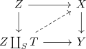
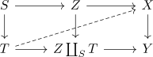

set with left lifting property closed under pushouts
Proposition
Let $\mathcal{C}$ be a category, $\mathcal{S} \subseteq \mathrm{Mor}(\mathcal{C})$ a subcollection of morphisms
\begin{align*}
\chi_{L}(\mathcal{S})
\end{align*}
the set of morphisms with the set with the left lifting property
Then $\chi_L(\mathcal{S})$ is a closed under pushouts
Proof
Given $f: X $\rightarrow Y \in \mathcal{S}$ and $s: S \rightarrow T \in \chi_{L}(\mathcal{S})$
Then given a lifting problem

this corresponds by the universal property of a pushout to a lift

which exists by assumption